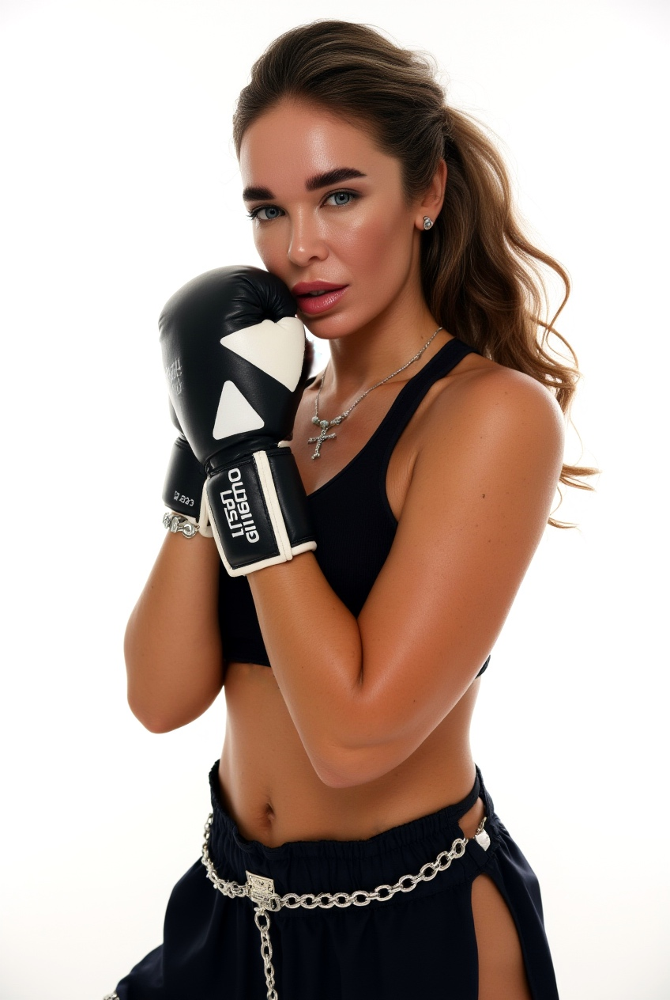

Складати свій раціон
Не залежати від готових меню, а розуміти принципи побудови харчування.
Це не марафон на 21 чи 30 днів. Це закритий жіночий простір, у якому ми разом працюємо над здоровими звичками, харчуванням, фізичною активністю та ставленням до себе без жорстких обмежень, стресу та постійних зривів.

Щоб результат залишався з вами надовго — не тільки поки триває марафон, а у вашому реальному житті, вдома, у подорожах, у кафе та в будь-якому ритмі.
Зворотний зв’язок від мене, відповіді на питання та допомога на кожному етапі.
Допомога в розрахунку КБЖВ, виборі продуктів і формуванні раціону з того, що є вдома.
Доступ до найкращих матеріалів і рецептів із понад 20 моїх марафонів.
Фітнес-завдання, рухова активність і мотивація без складного залу та перевантаження.
Натомість ви навчитеся розуміти харчування і впевнено обирати те, що працює саме для вас.
Не залежати від готових меню, а розуміти принципи побудови харчування.
Збирати збалансовану тарілку з будь-яких продуктів.
Харчуватися у кафе, гостях або подорожах без почуття провини.
Не рахувати кожну калорію постійно, але розуміти межі та баланс.
Поєднувати улюблену їжу, комфорт і результат без зривів.
Не ламати себе, а будувати новий спосіб життя у своєму темпі.
Коли стартів було багато, але підтримки та системи постійно не вистачало.
Якщо жорсткі правила викликають стрес, протест і швидкий зрив.
Без крайнощів, виснаження та шкоди для організму.
Більше енергії, легкості та розуміння власного тіла.
Самостійно, без залежності від чужих меню та постійних списків.
Оточення жінок зі схожими цілями допомагає рухатися стабільніше.
Ви можете залишатися в групі стільки, скільки вважаєте за потрібне. Щомісяця ви самостійно приймаєте рішення — продовжувати участь чи вийти з групи. Без зобов’язань, без тиску, без довгострокових контрактів.


І мій шлях — це про здоров’я, розвиток і любов до себе. 10 років у спортивних бальних танцях сформували мою любов до руху та дисципліни.
14 років я працювала в індустрії краси: відкривала студії, навчала майстрів і допомагала жінкам ставати впевненішими. З часом я зрозуміла: справжня краса починається зі здоров’я.
Саме тому я поглибила свої знання:
І найголовніше — я не просто навчаюсь, я практикую і щодня допомагаю жінкам змінювати своє тіло та самопочуття.
Я допомагаю худнути без жорстких дієт і стресу для організму. Без крайнощів. Без шкоди для здоров’я.
Мій підхід — це:
Я вірю, що кожна жінка може бути у своїй найкращій формі — не через виснаження, а через турботу про себе.
Якщо ви хочете не просто схуднути, а змінити якість життя — я поруч 🤍


Оплата та доступ проходять через Telegram / Tribute. Натисніть кнопку нижче, оформіть підписку та одразу отримайте доступ до закритої спільноти.